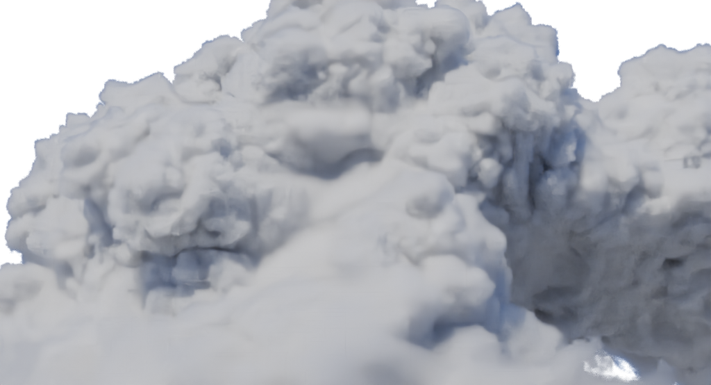
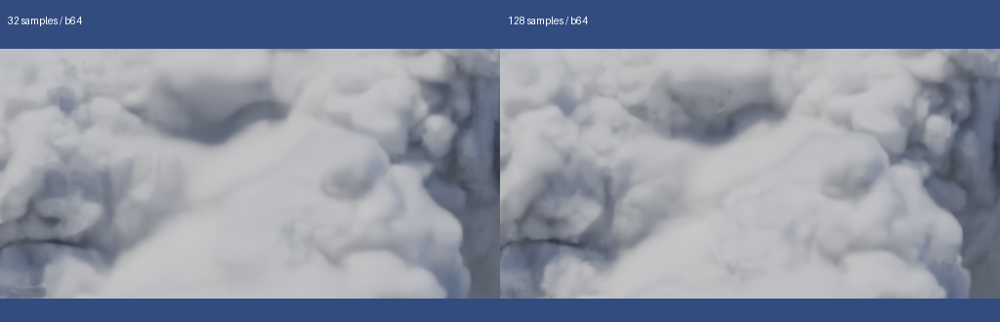
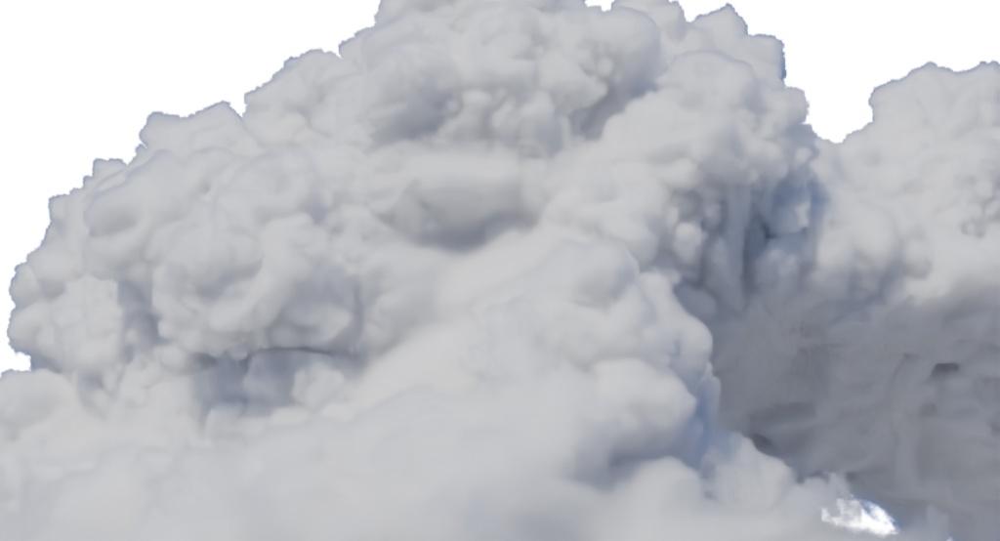
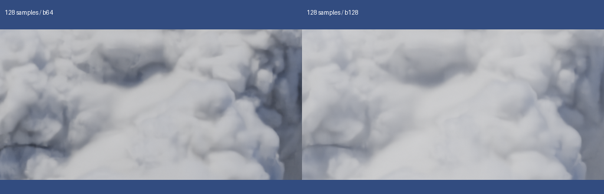
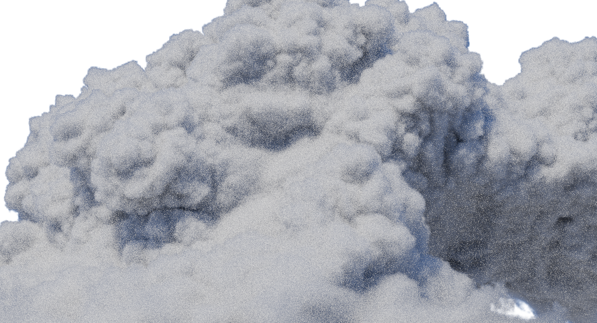
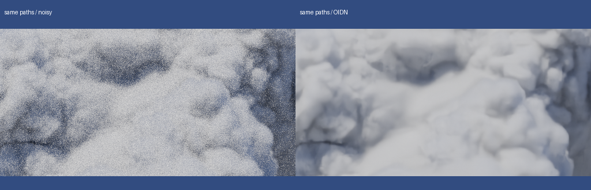
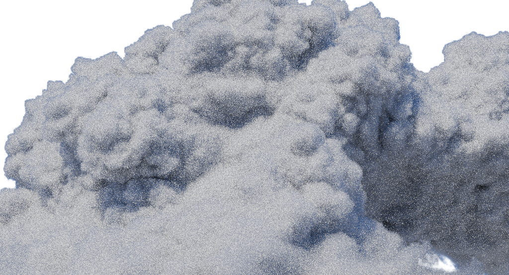
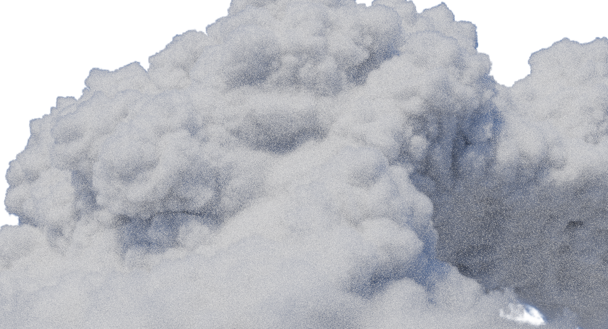

32 samples / 64 bounces · OIDN 결과

렌더 61.7초 · 1024×554 · fixed sampling
국소 에셋 시험 / TUNE · 동일 quarter 원본·빛·밀도4·HG.877·FOV27°·노출+1EV 고정. 새 native3장과 같은 렌더의 noisy pass3장. 실제 북유럽 씬 적용 전입니다.
32→128 fixed samples. adaptive sampling은 두 장 모두 끔. 아래 원본 링크로 확대해서 보세요.

렌더 61.7초 · 1024×554 · fixed sampling
렌더 238.5초 · 1024×554 · fixed sampling

128 samples 고정, total/volume bounces64→128. 모든 광선이 상한까지 산란했다는 뜻은 아닙니다.
렌더 238.5초 · 1024×554 · fixed sampling

렌더 402.2초 · 1024×554 · fixed sampling

noisy 화면의 작은 점을 실제 source 디테일로 평가하지 마세요. 두 화면은 하나의 렌더에서 저장했습니다.

렌더 238.5초 · 1024×554 · fixed sampling
렌더 238.5초 · 1024×554 · fixed sampling


렌더 61.7초 · 1024×554 · fixed sampling

렌더 402.2초 · 1024×554 · fixed sampling
출처: Copyright2017 Disney Enterprises Inc · CC BY-SA3.0 · 모델 사진 Kevin Udy. Cycles4.5.3 번안이며 Hyperion/Mitsuba 재현이 아닙니다.